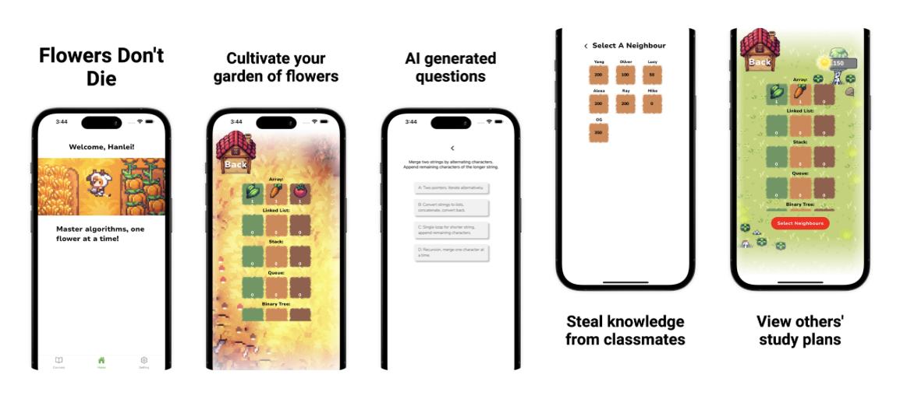

Flowers Don't Die:《力扣种花人》
边刷题，边种花，AI帮你每天五分钟进大厂
1分30秒的视频展示（B站： https://www.bilibili.com/video/BV1BS421d7oC/）
B站打不开？可看原始视频
准备好提升你的编程技能了吗？Flowers Don't Die 是你的终极伙伴，利用AI的力量帮助你掌握算法！
主要功能：
- 个性化的AI复习
- 培育你的算法花园
- 窥探他人的花园
- 挑战和竞争
今天就下载 Flowers Don't Die，开始绽放你的编程技能吧！（在苹果商店美区已上架）
关于 Flowers Don't Die
Flowers Don't Die 是一款利用AI技术的学习应用，旨在帮助你掌握算法，提升编程技能。通过个性化复习、游戏化学习体验和同伴见解，Flowers Don't Die 让你的学习之旅既有趣又高效。
联系我们
如果你需要帮助或有任何问题或反馈，请随时联系我们：
- 电子邮件: faradawny@gmail.com